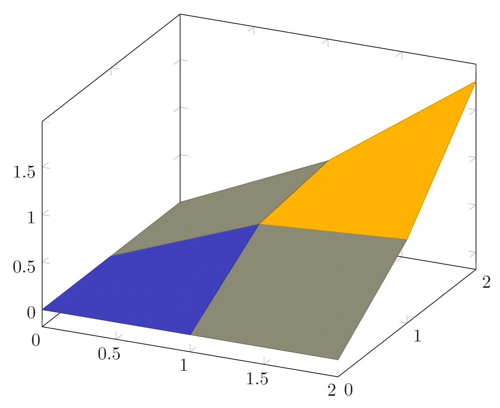

Pgfplots package
Introduction
The pgfplots package, which is based on TikZ, is a powerful visualization tool and ideal for creating scientific/technical graphics. The basic idea is that you provide the input data/formula and pgfplots does the rest.
The document preamble
To use the pgfplots package in your document add following line to your preamble:
\usepackage{pgfplots}
You also can configure the behaviour of pgfplots in the document preamble. For example, to change the size of each plot and guarantee backwards compatibility (recommended) add the next line:
\pgfplotsset{width=10cm,compat=1.9}
This changes the size of each pgfplot figure to 10 centimeters, which is huge; you may use different units (pt, mm, in). The compat parameter is for the code to work on the package version 1.9 or later.
Compilation time (brief background)
When the original TeX engine was conceived/written, more than 40 years ago, it was not designed for direct production of graphics—those were to be files created by external programs (e.g., MetaPost) and imported into the typeset document. The advent of pdfTeX—which is closely based on the original TeX software—brought the ability to create graphics directly by using pdfTeX's new built-in TeX language commands (called primitives) which can output the PDF operators/data required to produce graphics. The creation of pdfTeX led to the development of sophisticated LaTeX graphics packages, such as TikZ, pgfplots etc, capable of producing graphics coded using high-level LaTeX commands.
However, behind the scenes, and deep inside the pdfTeX engine (and other engines), those high-level LaTeX graphics commands need to be processed by "converting" them back into low-level pdfTeX engine (primitive) commands which actually generate (output) the PDF operators required to produce the resultant figure(s). That processing of graphical LaTeX commands—expansion and execution of primitives—can take a non-negligible amount of time. Even a single high-level LaTeX graphics command, together with its corresponding data, might require repeated execution of many low-level TeX engine (primitive) commands. From an end-user's perspective, documents containing multiple pgfplots figures, and/or very complex graphics, can take a considerable amount of time to render (compile).
Reducing compilation time
To increase speed of document-compilation you can configure the pgfplots package to export the figures to separate PDF files and then import them into the document: compile once, then re-use the figures. To do that, add the code shown below to the preamble:
\usepgfplotslibrary{external}
\tikzexternalize
See this help article for further details on how to set up tikz-externalization in your Overleaf project.
Basic example (also externalizing the figures)
\documentclass{article}
\usepackage[margin=0.25in]{geometry}
\usepackage{pgfplots}
\pgfplotsset{width=10cm,compat=1.9}
% We will externalize the figures
\usepgfplotslibrary{external}
\tikzexternalize
\begin{document}
First example is 2D and 3D math expressions plotted side-by-side.
%Here begins the 2D plot
\begin{tikzpicture}
\begin{axis}
\addplot[color=red]{exp(x)};
\end{axis}
\end{tikzpicture}
%Here ends the 2D plot
\hskip 5pt
%Here begins the 3D plot
\begin{tikzpicture}
\begin{axis}
\addplot3[
surf,
]
{exp(-x^2-y^2)*x};
\end{axis}
\end{tikzpicture}
%Here ends the 3D plot
\end{document}
Open this pgfplots example in Overleaf.
The following image shows the result produced by the code above:
Explanation of the code
Because pgfplots is based on tikz the plot must be inside a tikzpicture environment. Then the environment declaration \begin{axis}, \end{axis} will set the correct scaling for the plot—check the Reference guide for other axis environments.
To add an actual plot, the command \addplot[color=red]{log(x)}; is used. Inside the square brackets, [...], some options can be passed in; here, we set the color of the plot to red. The square brackets are mandatory, if no options are passed leave a blank space between them. Inside the curly brackets you put the function to plot. Is important to remember that this command must end with a semicolon (;).
To put a second plot next to the first one declare a new tikzpicture environment. Do not insert a new line, but a small blank gap, in this case hskip 10pt will insert a 10pt-wide blank space.
The rest of the syntax is the same, except for the \addplot3 [surf,]{exp(-x^2-y^2)*x};. This will add a 3dplot, and the option surf inside squared brackets declares that it's a surface plot. The function to plot must be placed inside curly brackets. Again, don't forget to put a semicolon (;) at the end of the command.
Note: It's recommended as a good practice to indent the code—see the second plot in the example above—and to add a comma (,) at the end of each option passed to \addplot. This way the code is more readable and is easier to add further options if needed.
2D plots
pgfplots' 2D plotting functionalities are vast—and you can personalize your plots to suit your requirements. Nevertheless, the default options usually give very good results, so all you need to do is feed the data and LaTeX will do the rest.
Plotting mathematical expressions
Here is an example:
\begin{tikzpicture}
\begin{axis}[
axis lines = left,
xlabel = \(x\),
ylabel = {\(f(x)\)},
]
%Below the red parabola is defined
\addplot [
domain=-10:10,
samples=100,
color=red,
]
{x^2 - 2*x - 1};
\addlegendentry{\(x^2 - 2x - 1\)}
%Here the blue parabola is defined
\addplot [
domain=-10:10,
samples=100,
color=blue,
]
{x^2 + 2*x + 1};
\addlegendentry{\(x^2 + 2x + 1\)}
\end{axis}
\end{tikzpicture}
Open this pgfplots example in Overleaf.
The output from this code is shown in the image below—the LaTeX document preamble is added automatically when you open the link:
Explanation of the code
Let's analyse the new commands line-by-line:
axis lines = left.- This will set the axis only on the left and bottom sides of the plot, instead of the default
box. Further customisation options at the reference guide.
xlabel = \(x\)andylabel = {\(f(x)\)}.- Self-explanatory parameter names, these will let you put a label on the horizontal and vertical axis. Notice the
ylabelvalue in between curly brackets, this brackets tellpgfplotshow to group the text. Thexlabelcould have had brackets too. This is useful for complicated labels that may confusepgfplots.
\addplot.- This will add a plot to the axis, general usage was described at the introduction. There are two new parameters in this example.
domain=-10:10.- This establishes the range of values of \(x\).
samples=100.- Determines the number of points in the interval defined by
domain. The greater the value ofsamplesthe sharper the graph you get, but it will take longer to render.
\addlegendentry{\(x^2 - 2x - 1\)}.- This adds the legend to identify the function \(x^2 - 2x - 1\).
To add another graph to the plot just write a new \addplot entry.
Plotting from data
Scientific research often yields data that has to be analysed. The next example shows how to plot data with pgfplots:
Plotting from data:
\begin{tikzpicture}
\begin{axis}[
title={Temperature dependence of CuSO\(_4\cdot\)5H\(_2\)O solubility},
xlabel={Temperature [\textcelsius]},
ylabel={Solubility [g per 100 g water]},
xmin=0, xmax=100,
ymin=0, ymax=120,
xtick={0,20,40,60,80,100},
ytick={0,20,40,60,80,100,120},
legend pos=north west,
ymajorgrids=true,
grid style=dashed,
]
\addplot[
color=blue,
mark=square,
]
coordinates {
(0,23.1)(10,27.5)(20,32)(30,37.8)(40,44.6)(60,61.8)(80,83.8)(100,114)
};
\legend{CuSO\(_4\cdot\)5H\(_2\)O}
\end{axis}
\end{tikzpicture}
Open this pgfplots example in Overleaf.
The output from this code is shown in the image below—the LaTeX document preamble is added automatically when you open the link:
Explanation of the code
There are some new commands and parameters here:
title={Temperature dependence of CuSO\(_4\cdot\)5H\(_2\)O solubility}.- As you might expect, assigns a title to the figure. The title will be displayed above the plot.
xmin=0, xmax=100, ymin=0, ymax=120.- Minimum and maximum bounds of the x and y axes.
xtick={0,20,40,60,80,100}, ytick={0,20,40,60,80,100,120}.- Points where the marks are placed. If empty the ticks are set automatically.
legend pos=north west.- Position of the legend box. Check the reference guide for more options.
ymajorgrids=true.- This Enables/disables grid lines at the tick positions on the y axis. Use
xmajorgridsto enable grid lines on the x axis.
grid style=dashed.- Self-explanatory. To display dashed grid lines.
mark=square.- This draws a squared mark at each point in the
coordinatesarray. Each mark will be connected with the next one by a straight line.
coordinates {(0,23.1)(10,27.5)(20,32)...}- Coordinates of the points to be plotted. This is the data you want analyse graphically.
If the data is in a file, which is the case most of the time; instead of the commands \addplot and coordinates you should use \addplot table {file_with_the_data.dat}, the rest of the options are valid in this environment.
Scatter plots
Scatter plots are used to represent information by using some kind of marks and are commonly used when computing statistical regression. In this example we'll create a scatter plot using data contained in a file called scattered_example.dat, in which the data looks like this:
GPA ma ve co un 3.45 643 589 3.76 3.52 2.78 558 512 2.87 2.91 2.52 583 503 2.54 2.4 3.67 685 602 3.83 3.47 3.24 592 538 3.29 3.47 2.1 562 486 2.64 2.37 ...
Our scatter plot uses the first two columns of the data:
\begin{tikzpicture}
\begin{axis}[
enlargelimits=false,
]
\addplot+[
only marks,
scatter,
mark=halfcircle*,
mark size=2.9pt]
table[meta=ma]
{scattered_example.dat};
\end{axis}
\end{tikzpicture}
Open a scatter plot project example in Overleaf (contains the data file scattered_example.dat).
Explanation of the code
The parameters passed to the axis and addplot environments can also be used in a data plot, except for scatter. Below the description of the code:
enlarge limits=false- This will shrink the axes so the point with maximum and minimum values lay on the edge of the plot.
only marks- Really explicit, will put a mark on each point.
scatter- When
scatteris used the points are coloured depending on a value, the colour is given by themetaparameter explained below.
mark=halfcircle*- The kind of mark to use on each point, check the reference guide for a list of possible values.
mark size=2.9pt- The size of each mark, different units can be used.
table[meta=ma]{scattered_example.dat};- Here the
tablecommand tells latex that the data to be plotted is in a file. Themeta=maparameter is passed to choose the column that determines the colour of each point. Inside curly brackets is the name of the data file.
Bar graphs
Bar graphs (also known as bar charts and bar plots) are used to display gathered data, mainly statistical data about a population of some sort. Bar plots in pgfplots are highly configurable, but here we are going to show a plain example:
\begin{tikzpicture}
\begin{axis}[
x tick label style={
/pgf/number format/1000 sep=},
ylabel=Year,
enlargelimits=0.05,
legend style={at={(0.5,-0.1)},
anchor=north,legend columns=-1},
ybar interval=0.7,
]
\addplot
coordinates {(2012,408184) (2011,408348)
(2010,414870) (2009,412156)};
\addplot
coordinates {(2012,388950) (2011,393007)
(2010,398449) (2009,395972)};
\legend{Men,Women}
\end{axis}
\end{tikzpicture}
Open this pgfplots bar code example in Overleaf.
The output from this code is shown in the image below—the LaTeX document preamble is added automatically when you open the link:
Explanation of the code
The figure starts with the (previously explained) declaration of the tikzpicture and axis environments, but the axis declaration has a number of new parameters:
x tick label style={/pgf/number format/1000 sep=}- This piece of code defines a complete style for the plot. With this style you may include several
\addplotcommands within thisaxisenvironment, they will fit and look nice together with no further tweaks (theybarparameter described below is mandatory for this to work).
enlargelimits=0.05.- Enlarging the limits in a bar plot is necessary because these kind of plots often require some extra space above the bar to look better and/or add a label. Then number 0.05 is relative to the total height of of the plot.
legend style={at={(0.5,-0.2)}, anchor=north,legend columns=-1}- Again, this will work just fine most of the time. If anything, change the value of
-0.2to locate the legend closer/farther from the x-axis.
ybar interval=0.7,- Thickness of each bar.
1meaning the bars will be one next to the other with no gaps and0meaning there will be no bars, but only vertical lines.
The coordinates in this kind of plot determine the base point of the bar and its height.
The labels on the y-axis will show up to 4 digits. If the numbers you are working with are greater than 9999 pgfplots will use the same notation as in the example.
3D Plots
pgfplots has the 3D Plotting capabilities that you may expect in a plotting software.
Plotting mathematical expressions
There's a simple example about this at the introduction, let's work on something slightly more complex:
\begin{tikzpicture}
\begin{axis}[
title=Example using the mesh parameter,
hide axis,
colormap/cool,
]
\addplot3[
mesh,
samples=50,
domain=-8:8,
]
{sin(deg(sqrt(x^2+y^2)))/sqrt(x^2+y^2)};
\addlegendentry{\(\frac{sin(r)}{r}\)}
\end{axis}
\end{tikzpicture}
Open this pgfplots 3D example in Overleaf.
The output from this code is shown in the image below—the LaTeX document preamble is added automatically when you open the link:
Explanation of the code
Most of the commands here have already been explained, but there are 3 new things:
hide axis- This option in the
axisenvironment is self descriptive, the axis won't be shown.
colormap/cool- Is the colour scheme to be used in the plot. Check the reference guide for more colour schemes.
mesh- This option is self-descriptive too, check also the
surfparameter in the introductory example.
Note: When working with trigonometric functions pgfplots uses degrees as default units, if the angle is in radians (as in this example) you have to use the deg function to convert to degrees.
Contour plots
In pgfplots it is possible to plot contour plots, but the data has to be pre-calculated by an external program. Let's see an example:
\begin{tikzpicture}
\begin{axis}
[
title={Contour plot, view from top},
view={0}{90}
]
\addplot3[
contour gnuplot={levels={0.8, 0.4, 0.2, -0.2}}
]
{sin(deg(sqrt(x^2+y^2)))/sqrt(x^2+y^2)};
\end{axis}
\end{tikzpicture}
Open this pgfplots contour plot example in Overleaf.
The output from this code is shown in the image below—the LaTeX document preamble is added automatically when you open the link:
Explanation of the code
This is a plot of some contour lines for the same equation used in the previous section. The value of the title parameter is inside curly brackets because it contains a comma, so we use the grouping brackets to avoid any confusion with the other parameters passed to the \begin{axis} declaration. There are two new commands:
view={0}{90}- This changes the view of the plot. The parameter is passed to the
axisenvironment, which means this can be used in any other type of 3D plot. The first value is a rotation, in degrees, around the z-axis; the second value is to rotate the view around the x-axis. In this example when we combine a 0° rotation around the z-axis and a 90° rotation around the x-axis we end up with a view of the plot from top.
contour gnuplot={levels={0.8, 0.4, 0.2, -0.2}}- This line of code does two things: First, it tells LaTeX to use the external software
gnuplotto compute the contour lines; this works fine in Overleaf but if you want to use this command in your local LaTeX installation you have to install gnuplot first (matlab will also work, in such case writematlabinstead ofgnuplotin the command). Second, the sub parameterlevelsis a list of values of elevation levels where the contour lines are to be computed.
Plotting a surface from data
To plot a set of data into a 3D surface all we need is the coordinates of each point. These coordinates could be an unordered set or, in this case, a matrix:
\begin{tikzpicture}
\begin{axis}
\addplot3[
surf,
]
coordinates {
(0,0,0) (0,1,0) (0,2,0)
(1,0,0) (1,1,0.6) (1,2,0.7)
(2,0,0) (2,1,0.7) (2,2,1.8)
};
\end{axis}
\end{tikzpicture}
Open this pgfplots 3D surface example in Overleaf.
The output from this code is shown in the image below—the LaTeX document preamble is added automatically when you open the link:

Explanation of the data
The points passed to the coordinates parameter are treated as contained in a 3 × 3 matrix, using a blank line as the separator for each matrix row.
All the options for 3D plots in this article apply to data surfaces.
Parametric plot
The syntax for parametric plots is slightly different. Let's see an example:
\begin{tikzpicture}
\begin{axis}
[
view={60}{30},
]
\addplot3[
domain=0:5*pi,
samples = 60,
samples y=0,
]
({sin(deg(x))},
{cos(deg(x))},
{x});
\end{axis}
\end{tikzpicture}
Open this pgfplots parametric plot example in Overleaf.
The output from this code is shown in the image below—the LaTeX document preamble is added automatically when you open the link:
Explanation of the code
There are only two new things in this example: first, the samples y=0 to prevent pgfplots from joining the extreme points of the spiral and; second, the way the function to plot is passed to the addplot3 environment. Each parameter function is grouped inside curly brackets and the three parameters are delimited with a parenthesis.
Reference guide
| Command/Option/Environment | Description | Possible Values |
|---|---|---|
| axis | Normal plots with linear scaling | |
| semilogxaxis | logarithmic scaling of x and normal scaling for y | |
| semilogyaxis | logarithmic scaling for y and normal scaling for x | |
| loglogaxis | logarithmic scaling for the x and y axes | |
| axis lines | changes the way the axes are drawn. default is 'box | box, left, middle, center, right, none |
| legend pos | position of the legend box | south west, south east, north west, north east, outer north east |
| mark | type of marks used in data plotting. When a single-character is used, the character appearance is very similar to the actual mark. | *, x , +, |, o, asterisk, star, 10-pointed star, oplus, oplus*, otimes, otimes*, square, square*, triangle, triangle*, diamond, halfdiamond*, halfsquare*, right*, left*, Mercedes star, Mercedes star flipped, halfcircle, halfcircle*, pentagon, pentagon*, cubes. (cubes only work on 3d plots). |
| colormap | colour scheme to be used in a plot, can be personalized but there are some predefined colormaps | hot, hot2, jet, blackwhite, bluered, cool, greenyellow, redyellow, violet. |
Further reading
For more information see:
- Using colours in LaTeX
- TikZ package
- Externalising pgfplots and tikzpictures
- Inserting Images
- Lists of tables and figures
- Positioning images and tables
- Drawing diagrams directly in LaTeX
- The pgfplots package documentation.
- The TikZ and PGF Packages: Manual for version 3.0.0
- TikZ and PGF examples at TeXample.net
Overleaf guides
- Creating a document in Overleaf
- Uploading a project
- Copying a project
- Creating a project from a template
- Using the Overleaf project menu
- Including images in Overleaf
- Exporting your work from Overleaf
- Working offline in Overleaf
- Using Track Changes in Overleaf
- Using bibliographies in Overleaf
- Sharing your work with others
- Using the History feature
- Debugging Compilation timeout errors
- How-to guides
- Guide to Overleaf’s premium features
LaTeX Basics
- Creating your first LaTeX document
- Choosing a LaTeX Compiler
- Paragraphs and new lines
- Bold, italics and underlining
- Lists
- Errors
Mathematics
- Mathematical expressions
- Subscripts and superscripts
- Brackets and Parentheses
- Matrices
- Fractions and Binomials
- Aligning equations
- Operators
- Spacing in math mode
- Integrals, sums and limits
- Display style in math mode
- List of Greek letters and math symbols
- Mathematical fonts
- Using the Symbol Palette in Overleaf
Figures and tables
- Inserting Images
- Tables
- Positioning Images and Tables
- Lists of Tables and Figures
- Drawing Diagrams Directly in LaTeX
- TikZ package
References and Citations
- Bibliography management with bibtex
- Bibliography management with natbib
- Bibliography management with biblatex
- Bibtex bibliography styles
- Natbib bibliography styles
- Natbib citation styles
- Biblatex bibliography styles
- Biblatex citation styles
Languages
- Multilingual typesetting on Overleaf using polyglossia and fontspec
- Multilingual typesetting on Overleaf using babel and fontspec
- International language support
- Quotations and quotation marks
- Arabic
- Chinese
- French
- German
- Greek
- Italian
- Japanese
- Korean
- Portuguese
- Russian
- Spanish
Document structure
- Sections and chapters
- Table of contents
- Cross referencing sections, equations and floats
- Indices
- Glossaries
- Nomenclatures
- Management in a large project
- Multi-file LaTeX projects
- Hyperlinks
Formatting
- Lengths in LaTeX
- Headers and footers
- Page numbering
- Paragraph formatting
- Line breaks and blank spaces
- Text alignment
- Page size and margins
- Single sided and double sided documents
- Multiple columns
- Counters
- Code listing
- Code Highlighting with minted
- Using colours in LaTeX
- Footnotes
- Margin notes
Fonts
Presentations
Commands
Field specific
- Theorems and proofs
- Chemistry formulae
- Feynman diagrams
- Molecular orbital diagrams
- Chess notation
- Knitting patterns
- CircuiTikz package
- Pgfplots package
- Typesetting exams in LaTeX
- Knitr
- Attribute Value Matrices
Class files
- Understanding packages and class files
- List of packages and class files
- Writing your own package
- Writing your own class